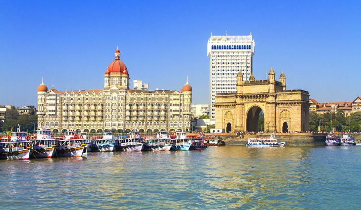
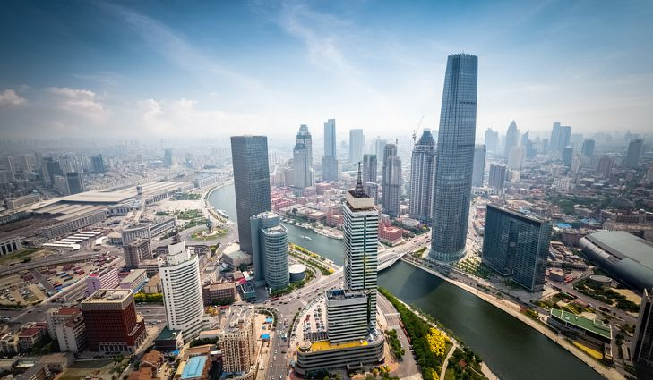
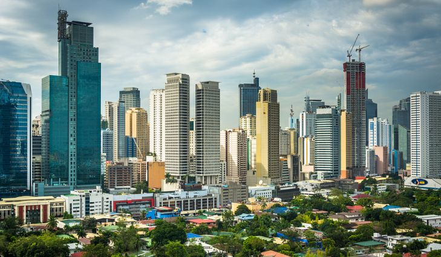
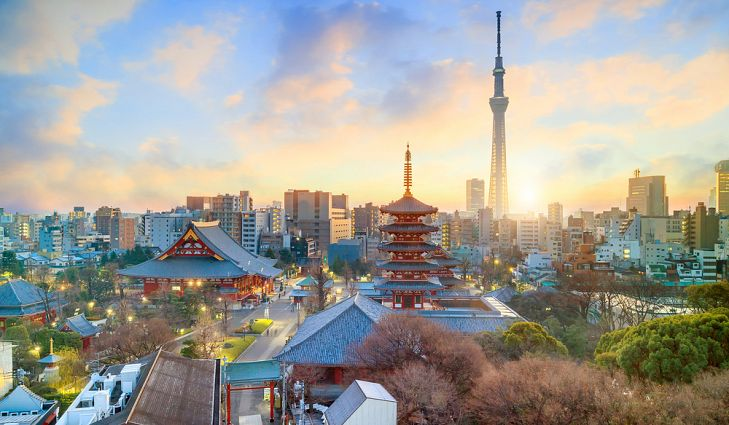
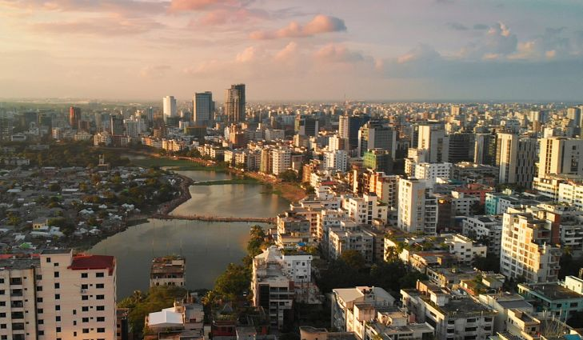
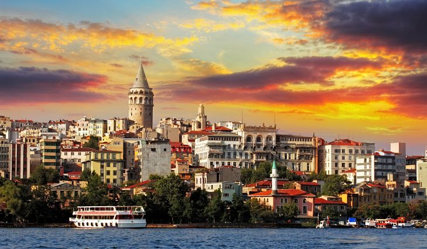
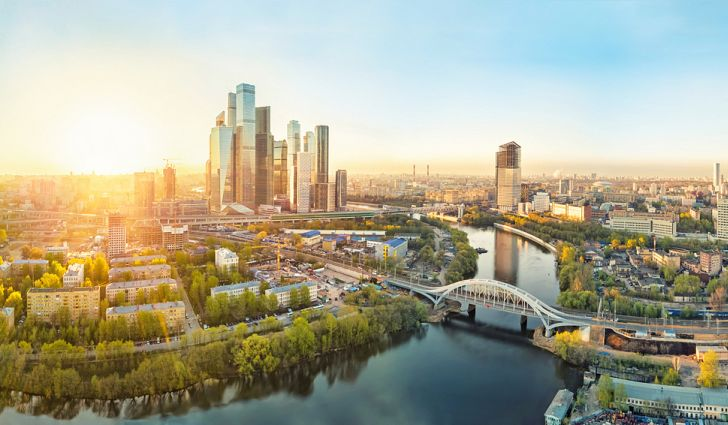
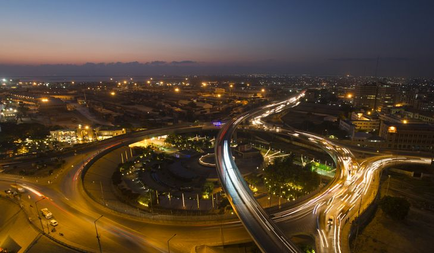
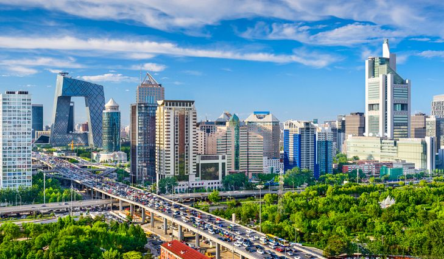
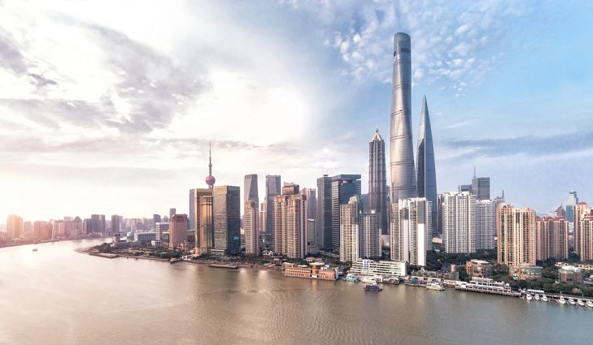

The 10 Largest Cities In The World
HOME | BLOG
Urban centers have been proliferating across the world as large populations settle in cities to take advantage of better economic opportunities, modern infrastructure, and other amenities. Asian cities have particularly recorded outstanding growth, and most of the largest cities are currently situated on the continent such as Shanghai, Beijing, Dhaka, Tokyo, Delhi, Mumbai, Karachi, and Guangzhou. The only African city on the list is Kinshasa.
1. Mumbai
Mumbai lies on the western coast of the Indian Subcontinent, and has approximately 12.4 million inhabitants. Mumbai developed around a fort established by the British in the 17th century. Its natural harbor facilitated its growth, and by the 18th century, Mumbai was home to a thriving manufacturing sector. The largest population of billionaires and millionaires for any Indian City reside in Mumbai. Mumbai hosts such important financial institutions as the Bombay Stock Exchange and the Reserve Bank of India. As an art center, Mumbai hosts the Bollywood industry as well as the Marathi cinema industry.
2. Spain - 81.8 million visitors
Tourism is a major industry in Spain, contributing nearly 11% to the national GDP of the country. The majority of visitors to Spain come from European countries, such as the United Kingdom, France, Italy, and Germany. Between the historical cities and towns of the country like Barcelona and Madrid.
The world-class resorts at the Mediterranean and Atlantic coasts of the country, the popular festivals like the Carnival and the Running of the Bulls, 15 national parks, well-developed winter tourism facilities, and a bustling nightlife, Spain is a hotspot of tourist attractions. 13 Spanish cities are also regarded as UNESCO World Heritage Sites, attracting foreign visitors with their unique charm and significance.
3. Tianjin - 12.7 million
Tianjin lies in China's northern coastal region, and it has over 12 million residents. Tianjin developed as a trading center after the Grand Canal was opened in the era of the Sui Dynasty. The city saw particular growth under the Qing Dynasty as well as the Republic of China, and it has served as a treaty port since 1860. Tianjin is also a gateway to Beijing, and European architecture reflects its colonial history. The city's GDP in 2014 was 1.572 trillion yuan with the highest GDP per capita in the country at $17,126.
4. Manila - 12.8 million
The city of Manila was first founded by the Spanish in 1571. Because of this, the city is home to many historic sites dating back hundreds of years as well as a unique mix of architectural styles. The design of the city was carefully planned by American architect and urban planner, Daniel Burnham in 1905. Today, the city is the capital of the Philippines and listed as an alpha-global city. Manila sits on the shores of Manila Bay, and is renown for its harbor. The city is prone to natural disasters such as floods, earthquakes, tsunamis, and typhoons.
5. Moscow - 13.1 million
FMoscow is Russia's largest city as well as the country's capital. Situated on the banks of the Moskva River in central Russia, the city is the world's northernmost megacity. The city has been the seat of power for a multitude of states before being named as the capital of Russia and the home of the Government of Russia. The city is known for its well-developed transit network, large green areas, and stunning architecture.
6. Tokyo - 13.6 million
Tokyo lies on the eastern coast of Honshu, the largest of the four islands that make up Japan. The city is the Japanese capital and one of Japan's forty-seven prefectures. The city was initially called Edo but was renamed in 1868 when the Japanese imperial family relocated there from Kyoto. Tokyo's metropolis has an estimated 13,617,445 residents. Tokyo is home to fifty-one of the Fortune Global 500 firms, and it is ranked 4th in the Global Cities Index. The inhabitants of Tokyo are almost all Japanese with communities of Chinese and Koreans. Tokyo is home to headquarters of large corporations and financial institutions while the manufacturing sector is mainly concentrated in Yokohama, Chiba, and Kawasaki.
7. Dhaka - 14.5
The city now known as Dhaka has been a prominent commercial center since the 17th century and has been the capital of several empires and countries before becoming the capital of the newly independent Bangladesh in 1971. With a population of 14.5 million people, it is the largest city in Bangladesh and one of the major cities of South Asia. The city's population has grown tremendously over the past several decades emerging as a megacity by the 21st century. It is the major financial, political, and cultural center of the region.
8. Istanbul - 14.6 million
Istanbul had a fascinating history having been established around 660 BCE as Byzantion and reestablished in 330 CE as Constantinople. Istanbul was a capital of the Roman, Byzantine, Latin, and Ottoman Empires, the latter which transformed it into an Islamic center. The city was positioned along the infamous Silk Road which facilitated the settlement of diverse peoples in its territory. Istanbul has over 14 million inhabitants, and it attracts millions of tourists yearly as one of the most sought-after European tourist destinations. Istanbul has also earned a reputation as a historical, arts, cultural, and entertainment hub.
9. Karachi - 18 million
Karachi serves as the capital of Sindh Province, and its greater metropolitan area has 18 million residents. The city enjoys strategic location on the Arabian Sea, and it is home to Port Bin Qasim and Port of Karachi which are among Pakistan's largest ports. The city was established as a fortified village in 1729 called Kolachi, and it gained prominence with the occupation of the British. Karachi's residents belong to different ethnicities, races, and religions making it Pakistan's most diverse and secular city. Karachi's formal economy was valued at $113 billion in 2014, and it generates about 20% of the nation's GDP.
10. Beijing - 18.5 million
Beijing is the capital of China, and it sits on the North China plain in the country's north-central region. The city, also called Peking, has an eventful history from being one of the Four Great Ancient Capitals of China to foreign occupation as well as civil war in the 20th century. Beijing established itself as an industrial sector in the aftermath of the Communist Revolution of 1949. Automobiles, textiles, petrochemicals, aerospace equipment, and semiconductors are some of the products produced by the city's industrial sector. Beijing is home to over 20 million residents. As a cultural center, Beijing boasts of seven World Heritage Sites listed by UNESCO.